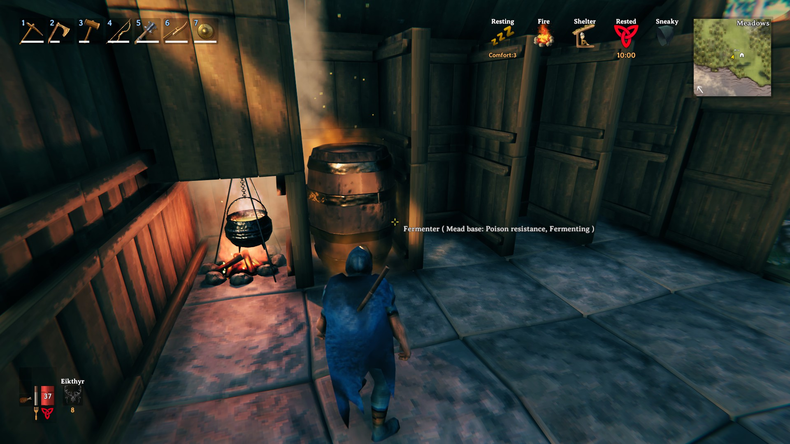
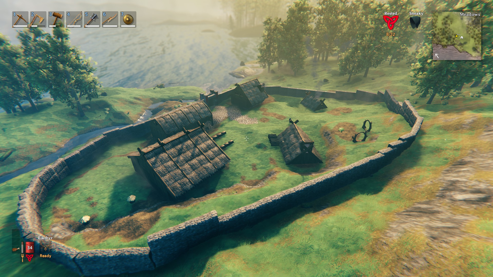
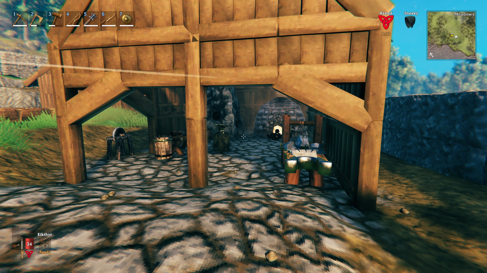

Farming - The Resources You Need
The resources you will need as you progress can be broken down into three classes: Food, Building Materials, and Raw Metals
Food
Pictured in the image, you can see a cauldron and a fermenter. These are two of the most important crafting stations for making food and mead. Eating food increases your stamina and health bar until your hunger is full. Mead gives you varying buffs like cold resistance, increased healing, and other resistances. Using the cauldron, you can craft different foods and mead bases to use in the fermenter. The main resources needed for crafting food are as follows:
- Raw Meat
- Berries
- Honey
- Thistle
- Entrails
Building Materials
When you are building, you will need to be in proximity to either a crafting bench or a stonecutter. The different building parts are either stone or wood based. The materials needed for building can be found in any biome, the main resources you will need are:
- Wood
- Fine Wood
- Core Wood
- Stone
- Bronze/Iron Nails
Raw Metals
Metals are different from other resources in Valheim because they need to be processed before they can be used to craft. The two workbenches you will need to process metals are the smelter and the charcoal kiln. The smelter turns raw metal into refined metal using charcoal from the kiln. Once the metals are processed, you can now use a forge to craft with them. The different levels of equipment are as follows:
- Bronze
- Iron
- Silver
- Black Metal